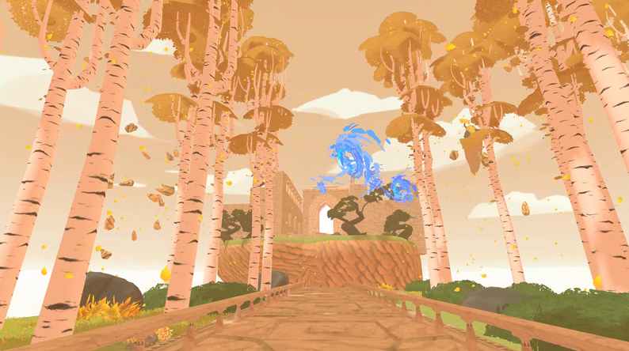
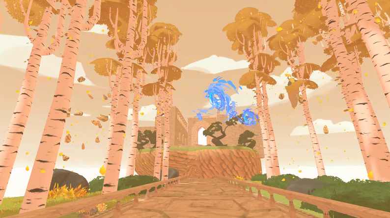

Snedkeren har sit træ.
Fotografen har lyset.
Forfatteren har ordet.
Vores arbejdsmateriale er lyden.
Vi skaber oplevelser med lyden,
skildrer fortællinger med lyde
og styrker budskaber med lyd.
2022 // Game audio
2021 // Game audio
Hvad der i én situation lyder godt, kan i andre forekomme forstyrrende - og omvendt.
Kvalificerede valg om brugen af lyd bygger på viden, erfaring og indsigt i anvendelsen af lyden. Vi arbejder på at bruge den rette lyd - på rette sted - til at skabe indtryk der ikke går i ét med baggrundsstøjen.
Vi er to kreative hjerner med en passion for lyd og musik, der strækker sig tilbage til barndommen.
Thomas har studeret på London Centre of Contemporary Music, er uddannet interaktions– og lyddesigner ved Aarhus Universitet og er grebet af forholdet mellem lyd, teknologi og menneske.
Mark er uddannet musiker fra Rytmisk Musikkonservatorium i København. Udover at komponere og producere musik, er han aktiv kontrabassist på Københavns musikscene.
I HØRBAR forener vi vores passion for lyd og kreative projekter, med ønsket om at skabe et bæredygtigt miljø for professionel lydproduktion. Vi leverer fleksible lyd- og musikløsninger til branding, medie- og kulturbranchen.


 
